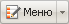
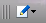

Редактирование меню возможно двумя способами: через форму в Административном разделе и через кнопки  в разделах Просмотр, Редактирование. А так же через Меню команд компонента Меню, которое имеет разный вид. Такой:  - в разделах Просмотр и Редактирование, и такой: - в разделе Разработка.
При использовании Административного раздела открывается Форма редактирования меню. при использовании кнопок в разделах Просмотр, Редактирование, Разработка надо выбирать команду Редактировать пункты меню. По этой команде откроется диалог Редактирование меню.
Форма редактирования меню предназначена для создания нового и редактирования пунктов уже существующего меню.
| Пункт | Описание |
|---|---|
| Каталог | Переход в папку, открытую в данный момент в менеджере файлов. |
| Расширенный/ Упрощённый режим | Переключение между режимами редактирования. |
| Редактировать как файл | Переключение в режим редактирования кода меню. Кнопка отображается при редактировании существующего меню. |
| Удалить меню | Удаление редактируемого меню. |
Данная форма служит интерфейсом для создания пунктов меню в упрощённом режиме. Для добавления новых пунктов следует заполнить поля таблицы и сохранить внесённые изменения.
| Поле | Описание |
|---|---|
| Тип меню | Тип создаваемого меню. |
| Пункты меню | |
| Название | Название пункта меню. Это название будет показано в меню в публичной части. |
| Ссылка | Ссылка на страницу или раздел сайта. |
| Сортировка | Порядок, в котором будут расположены пункты меню. Меньшее число соответствует более высокому пложению. |
| Удалить | Удаление пункта меню. Для того чтобы удалить пункт меню, установите флаг в это поле и нажмите кнопку Сохранить или Применить. |
Расширенный режим позволяет изменять значения дополнительных параметров пунктов меню.
| Поле | Описание |
|---|---|
| Тип меню | Тип создаваемого меню. |
| Шаблон меню | Если для отображения меню будет использоваться отдельный шаблон, то в данном поле можно указать путь к этому шаблону. |
| Пункты меню
| |
| Название | Название пункта меню. Именно это название будет показано в меню в публичной части. |
| Ссылка | Ссылка на страницу или раздел сайта. |
| Сортировка | Порядок, в котором будут расположены пункты меню. Чем меньшее число вы укажете, тем выше будет расположен данный пункт. |
| Удалить | Удаление пункта меню. Для того чтобы удалить пункт меню, установите флаг в это поле и нажмите кнопку Сохранить или Применить. |
| Дополнительные ссылки для подсветки | Указываются страницы сайта, при переходе на которые также будет подсвечиваться (выделяться) создаваемый пункт меню.
Например, пункт меню Siemens ссылается на страницу со списком телефонов соответствующей марки ( /catalog/phone/section.php). Если вы хотите, чтобы при просмотре детальной информации о каждой модели телефона также выделялся пункт меню Siemens, то в этом поле нужно указать путь к странице с детальной информацией о модели телефона (например, /catalog/phone/element.php).
Путь к страницам задается относительно корня сайта. Если все страницы, при переходе на которые должен быть подсвечен пункт меню, хранятся в одной папке сайта, то в поле Дополнительные ссылки для подсветки можно указать путь к данной папке относительно корня сайта. Например, /catalog/phone/. |
| Тип условия | Тип условия, при выполнении которого пункт меню будет показываться посетителям:
|
| Условие | Условие, при выполнении которого будет отображаться создаваемый пункт меню. |
| Параметры | Указываются любые параметры, используемые при построении шаблоном пункта меню. Параметры хранятся в ассоциированном массиве $PARAMS в виде пар "имя => значение". При построении меню по шаблону, в самом шаблоне может быть добавлена проверка параметра, например:
if ($PARAMS["MY_PARAM"]=="Y")или подставлено его значение: <a href='".$link."' В поставляемом дистрибутиве продукта для меню используется параметр Дополнительное выделение пунктов меню, позволяющий выделить первый пункт меню с помощью разделителя. Для этого в поле Название параметра необходимо указать |
Кнопка Вставить пункт добавляет в форму еще один пункт меню.
| Кнопка | Описание |
|---|---|
| Сохранить | Сохранение внесённых изменений. |
| Применить | Применение внесённых изменений. Продолжение редактирования пунктов меню. |
| Отменить | Отмена внесённых изменений. |
| Колонка
| Описание
|
|---|---|
| Якорь | Инструмент для изменения положения пункта меню в общем порядке меню способом Drag&Drop. |
| Название
| Имя пункта меню
|
| Ссылка | Раздел, к которому привязан пункт меню |
| Папки | Открытие диалога для выбора файла (папки)
|
| Стрелки | Инструмент для пошагового изменения положения пунта меню в общем порядке меню. |
| Удалить | Удаление пункта меню |
| Кнопки
| Команда
|
|---|---|
| Сохранить | Сохранение внесенных изменений. |
| Отменить
| Отказ от внесенных изменений.
|
| © «Битрикс», 2001-2008, «1C-Битрикс», 2008 | 1С-Битрикс: Управление сайтом |